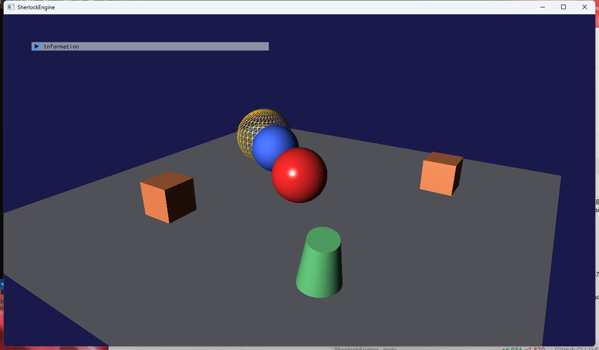
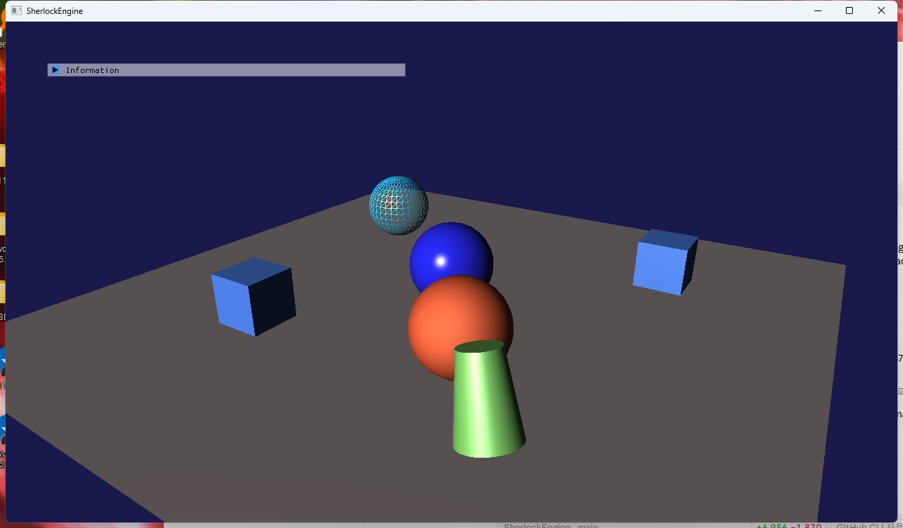
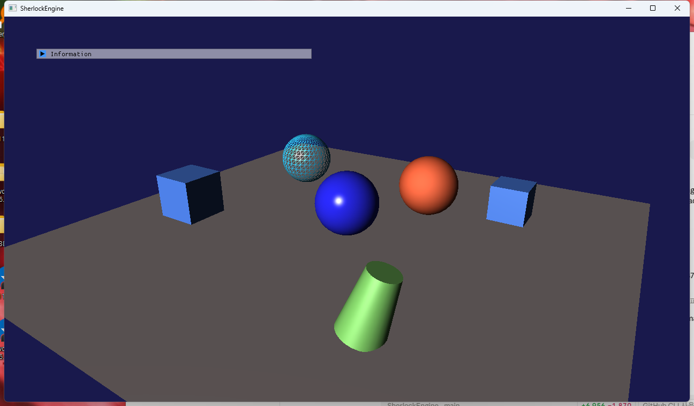
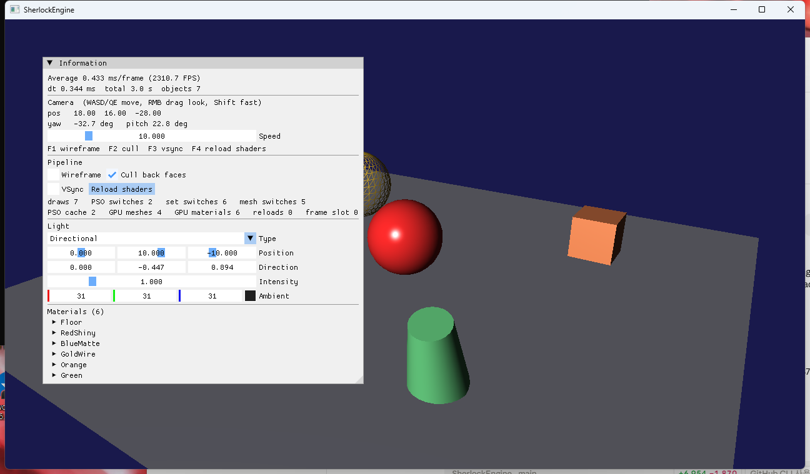

4단계 · Material과 바인딩 레이아웃
D3D12의 루트 시그니처에 해당하는 BindingLayout과 디스크립터 테이블에 해당하는 ResourceSet을 D3D11 위에 미리 만들고, 그 위에 Material을 올린 단계입니다. 함께 정점 포맷을 열거형으로 바꾸고, 셰이더가 실제로 쓰는 슬롯을 리플렉션으로 읽어 선언과 대조했습니다. 또 빌드 때 .cso를 만들되, Debug에서는 HLSL을 저장하는 순간 다시 컴파일되어 화면에 반영되게 했습니다. 드로우는 PSO → Material → Mesh 순으로 정렬됩니다.
"이 파이프라인은 b0·b1·b2·b3을 쓴다"는 선언(BindingLayoutDesc)이 PSO Desc에 들어가고, 각 슬롯에 무엇을 꽂을지는 ResourceSet이 정합니다. D3D11에서 SetResourceSet은 슬롯마다 *SSetConstantBuffers를 부르는 것뿐이지만, D3D12에서는 같은 호출이 디스크립터 테이블 하나를 세팅합니다. Material은 재질 상수버퍼 하나와 재질 ResourceSet 하나이고, 옵션(와이어프레임·양면)에 따라 다른 PSO를 고릅니다. 셰이더는 빌드 시 .cso로 컴파일되지만 Debug에서 소스가 바뀌면 다시 컴파일되어 PSO 캐시가 세대를 올리며 재생성됩니다.
1.요약
| 구성 요소 | 파일 | 역할 |
|---|---|---|
| BindingLayoutDesc / ResourceSetDesc | Graphics/BindingTypes.h | 슬롯 {타입 CBV/SRV/Sampler, 스테이지 마스크, 레지스터} 배열과, 그 슬롯에 꽂을 핸들 배열. 상한 CBV 8 · SRV 16 · Sampler 8 |
| Device::CreateBindingLayout / CreateResourceSet / SetResourceSet | Graphics/D3D11/Device.cpp | 선언 검증(중복·상한·스테이지 0), 셋 생성 시 핸들 종류 검증, 바인딩 시 슬롯별 D3D11 호출 |
| PipelineStateDesc.bindingLayouts[4] | Graphics/PipelineTypes.h | D3D12 pRootSignature 자리. 해시·비교에 포함 |
| Material | Scene/Material.h | baseColor·specularColor·shininess·wireframe·doubleSided. CPU 데이터 |
| MaterialConstants (b3) | Graphics/ShaderConstants.h, Shaders/Common.hlsli | 32바이트. LightConstants는 672 → 656 |
| VertexFormat | Graphics/VertexTypes.h | 열거형 + GetVertexLayout(format). Mesh가 자기 포맷을 말한다 |
| ShaderCompiler::ReflectBindings / LoadOrCompile | Graphics/D3D11/ShaderCompiler.cpp | b#/t#/s# 리플렉션, .cso ↔ 소스 선택 |
| PipelineStateCache::Clear + 세대 | Graphics/D3D11/PipelineStateCache.cpp | 핫리로드 후 이전 핸들을 무효화 |
| Renderer | Graphics/Renderer.cpp | 레이아웃 3개·셋 2개 생성, GpuMaterial 캐시, 드로우 목록 정렬, 상태 캐시, 파일 감시 |
| FxCompile 항목 + 타깃 2개 | SherlockEngine.vcxproj | .cso 생성, 출력 폴더 생성, 소스 사본 복사 |
2.루트 시그니처를 D3D11에 미리 그리기
2.1 BindingLayout과 ResourceSet
D3D12의 루트 시그니처는 "파이프라인에 어떤 종류의 리소스가 어떤 슬롯으로 바인딩되는가"를 정의합니다[1]. 셰이더의 register(b0) 같은 가상 레지스터는 루트 시그니처를 통해 디스크립터 힙의 실제 위치로 연결되고, 디스크립터 테이블은 "논리적으로 디스크립터의 배열"입니다[2]. D3D11에는 이 개념이 없습니다. VSSetConstantBuffers(0, 1, &buffer)처럼 슬롯에 직접 꽂습니다. 그래서 4단계는 D3D11 위에 두 개념을 이름만 먼저 만듭니다.
// Graphics/BindingTypes.h
enum class BindingType : uint8_t { ConstantBuffer, ShaderResource, Sampler }; // b# / t# / s#
struct BindingSlot { BindingType type; uint8_t stageMask; uint8_t reg; };
struct BindingLayoutDesc { BindingSlot slots[16]; uint8_t slotCount; const char* debugName;
BindingLayoutDesc& Add(BindingType, uint8_t stageMask, uint8_t reg); };
struct ResourceBinding { BufferHandle buffer; TextureHandle texture; }; // 슬롯 타입에 따라 하나만
struct ResourceSetDesc { BindingLayoutHandle layout; ResourceBinding bindings[16]; const char* debugName; };// Graphics/D3D11/Device.cpp — SetResourceSet. D3D12라면 SetGraphicsRootDescriptorTable 한 번.
for (i < layout->desc.slotCount)
{
const BindingSlot& slot = layout->desc.slots[i];
const ResourceBinding& binding = set->desc.bindings[i];
switch (slot.type)
{
case BindingType::ConstantBuffer:
ID3D11Buffer* b = m_buffers.Get(binding.buffer)->Get(m_frameIndex); // Dynamic 링의 이번 프레임 복제본
if (slot.stageMask & ShaderStageMask_Vertex) m_context->VSSetConstantBuffers(slot.reg, 1, &b);
if (slot.stageMask & ShaderStageMask_Pixel) m_context->PSSetConstantBuffers(slot.reg, 1, &b);
break;
case BindingType::ShaderResource: // t#: 텍스처의 SRV. 5단계에서 실제로 쓰인다
…VSSetShaderResources / PSSetShaderResources…
}
}검증은 생성 시점에 합니다. CreateBindingLayout은 슬롯 상한, 스테이지 마스크 0, 같은 (타입, 레지스터)가 같은 스테이지에 두 번 선언되는 경우(뒤의 선언이 앞의 것을 덮어 조용히 틀어짐)를 거부합니다. CreateResourceSet은 슬롯 타입에 맞는 종류의 핸들(상수버퍼 슬롯에 BufferBind_Constant 버퍼, SRV 슬롯에 TextureBind_ShaderResource 텍스처)이 꽂혀 있는지 확인합니다. 드로우마다 검사하지 않기 위해서입니다. 3단계까지 있던 BindConstantBuffer(slot, handle, stageMask)는 지웠습니다. 남겨 두면 레이아웃을 우회하는 길이 되기 때문입니다.
2.2 갱신 빈도별 셋 세 개
| 레이아웃 / 셋 | 슬롯 | 갱신 | 바인딩 | D3D12 대응 |
|---|---|---|---|---|
| Layout_Frame / Set_Frame | b0 PerFrame (VS|PS), b2 Lights (PS) | 프레임 1회 | 프레임 초 1회 | 루트 파라미터 0 — 가장 드물게 바뀜 |
| Layout_Object / Set_Object | b1 PerObject (VS) | 드로우마다 내용만 Map | 프레임 초 1회 | 루트 CBV 또는 링 버퍼 오프셋 |
| Layout_Material / Set_Material×N | b3 Material (PS) | 재질당 프레임 1회 | 재질이 바뀔 때 | 재질 디스크립터 테이블. 5단계에서 t0·s0이 여기 붙는다 |
세 레이아웃은 PipelineStateDesc::bindingLayouts[0..2]에 순서대로 들어갑니다. D3D12에서는 이 배열이 루트 시그니처 하나의 루트 파라미터 목록이 됩니다. Microsoft는 "자주 바뀌는 파라미터를 앞에 두라"고 하는데[3], 지금 순서(프레임 → 오브젝트 → 재질)는 원문 4단계의 "프레임마다 바뀌는 것과 재질마다 바뀌는 것을 다른 ResourceSet으로"를 따른 것입니다. 8단계에서 루트 시그니처를 만들 때 순서를 성능에 맞게 재배치해도, Renderer는 셋을 바인딩할 뿐이라 바뀌지 않습니다.
오브젝트 셋을 "프레임 초 1회"만 바인딩해도 되는 것은 3단계의 Dynamic 버퍼 의미론 덕분입니다. UpdateBuffer가 Map(WRITE_DISCARD)로 내용을 바꿔도 D3D11 객체(ID3D11Buffer*)는 같으므로 바인딩은 유효하고, 드라이버가 드로우마다 다른 메모리를 가리키게 합니다. D3D12에서는 이 자리가 링 버퍼 오프셋 갱신(루트 CBV 주소 변경)이 됩니다.
2.3 D3D12의 64 DWORD 예산
루트 시그니처는 최대 64 DWORD이고 디스크립터 테이블은 1 DWORD, 루트 상수는 1 DWORD, 루트 디스크립터는 2 DWORD를 씁니다[3]. 세 테이블이면 3 DWORD로 여유가 많지만, 슬롯을 무한정 늘릴 수 없다는 사실을 BindingTypes.h의 상한(CBV 8, SRV 16, Sampler 8)으로 지금부터 드러냈습니다. D3D11 자체 한도(CBV 14, SRV 128, Sampler 16)보다 좁습니다. 원문 4단계가 제안한 값(CBV 4, SRV 16, Sampler 8)에서 CBV만 8로 늘렸는데, 이미 b0~b3 넷을 쓰고 있어 4는 여유가 없기 때문입니다. 일부 하드웨어는 루트 인자 공간이 16 DWORD로 고정되어 있어, 이를 넘기면 느린 메모리로 흘러넘친다는 점도 같은 문서에 나옵니다.
3.Material
// Scene/Material.h — CPU 데이터
struct Material
{
std::string name;
XMFLOAT4 baseColor{1,1,1,1}; // 정점 색에 곱해진다
XMFLOAT3 specularColor{1,1,1};
float shininess = 32.0f;
bool wireframe = false; // 파이프라인 상태에 영향 → 다른 PSO
bool doubleSided = false;
};
// Graphics/Renderer.h — GPU 쪽 캐시 (Mesh → GpuMesh 와 같은 경계)
struct GpuMaterial { BufferHandle constants; ResourceSetHandle set; uint64_t uploadedFrame; };
std::unordered_map<const Material*, GpuMaterial> m_gpuMaterials;원문은 "Material = PipelineHandle + ResourceSet + MaterialConstants(Buffer)"라고 했습니다. 두 가지를 바꿨습니다. 첫째, PipelineHandle을 저장하지 않습니다. PSO는 Desc가 캐시 키이므로 매 프레임 GetPipelineFor(material, vertexFormat)으로 Desc를 만들어 캐시에 물으면 됩니다. 그래야 핫리로드로 캐시가 비워졌을 때 stale 핸들이 남지 않습니다. 둘째, CPU 데이터(Scene/Material.h)와 GPU 캐시(Renderer)를 분리했습니다. 3단계에서 Mesh에 적용한 경계와 같습니다. Scene::AddMaterial이 unique_ptr로 소유하고 GameObject는 const Material*를 듭니다. 재질이 nullptr이면 Renderer의 기본 재질(흰색, 광택 32)을 씁니다.
specularColor와 shininess는 LightConstants에서 MaterialConstants(b3, 32바이트)로 옮겨 갔습니다. 조명 버퍼는 672 → 656바이트가 되었고 static_assert와 Common.hlsli를 같이 고쳤습니다. 픽셀 셰이더의 변경은 두 줄입니다.
// Shaders/BasicPixelShader.hlsl
const float4 surface = input.col * baseColor; // 재질의 기본색 × 정점 색
const float3 albedo = surface.rgb;
…
return float4(finalColor, surface.a);재질 상수는 프레임에 재질당 한 번 올립니다. 같은 재질을 여러 오브젝트가 쓰면 첫 드로우에서만 Map합니다(uploadedFrame 스탬프). 매 프레임 올리는 이유는 ImGui 재질 패널의 편집이 즉시 반영되어야 하기 때문이고, 32바이트 × 재질 수라 비용이랄 것이 없습니다.
4.정점 포맷 열거
원문 D9가 권한 (a) "정점 타입 열거 + offsetof 레이아웃" 방식입니다. 1단계에서 이미 GetVertexLayoutPCN()이 offsetof를 썼으므로, 남은 것은 메시가 자기 포맷을 말하게 하는 것이었습니다.
// Graphics/VertexTypes.h
enum class VertexFormat : uint8_t { PositionColorNormal }; // 5단계 PNT, 6단계 PNTT 추가 예정
inline VertexLayoutDesc GetVertexLayout(VertexFormat format);
inline uint32_t GetVertexStride(VertexFormat format);
// Graphics/Mesh.h
VertexFormat GetVertexFormat() const;
// Graphics/Renderer.cpp
desc.vertexLayout = GetVertexLayout(vertexFormat); // PSO Desc의 일부 → 포맷이 다르면 다른 PSO
vbDesc.stride = GetVertexStride(mesh.GetVertexFormat());InputLayout은 여전히 PSO 안에서만 만들어집니다(1단계). 리플렉션(D9의 (b))은 5절에서 바인딩 검사에 썼고, 입력 시그니처 검사는 CreateInputLayout이 이미 하므로(시맨틱이 맞지 않으면 실패) 따로 하지 않았습니다.
5.리플렉션으로 선언 대조
BindingLayout은 손으로 선언합니다. 셰이더에 cbuffer Extra : register(b4)를 추가하고 레이아웃에 넣는 것을 잊으면 D3D11은 아무 말 없이 b4에 널이 바인딩된 채 그립니다(전부 0으로 읽힘). 이것을 초기화 시점에 잡습니다.
// Graphics/D3D11/ShaderCompiler.cpp
bool ReflectBindings(const std::vector<uint8_t>& bytecode, std::vector<ReflectedBinding>& out)
{
D3DReflect(bytecode.data(), bytecode.size(), IID_PPV_ARGS(&reflection));
reflection->GetDesc(&shaderDesc);
for (i < shaderDesc.BoundResources)
{
reflection->GetResourceBindingDesc(i, &bind); // D3D11_SHADER_INPUT_BIND_DESC
switch (bind.Type) { case D3D_SIT_CBUFFER: … ConstantBuffer; case D3D_SIT_TEXTURE: … ShaderResource; case D3D_SIT_SAMPLER: … Sampler; }
out.push_back({ type, bind.BindPoint, bind.Name });
}
}ID3D11ShaderReflection::GetResourceBindingDesc는 "리소스 하나가 셰이더 입력으로 어떻게 바인딩되는지"를 돌려줍니다[4]. Renderer::ValidateBindings는 VS와 PS 각각에 대해 리플렉션 결과의 모든 (타입, 레지스터)가 세 레이아웃의 합집합 안에 그 스테이지로 선언되어 있는지 확인합니다. Debug에서는 불일치하면 초기화가 실패하고, Release에서는 경고만 남깁니다. 로그:
[정보] 바인딩 대조: VS b0 ('PerFrame') OK
[정보] 바인딩 대조: VS b1 ('PerObject') OK
[정보] 바인딩 대조: PS b0 ('PerFrame') OK
[정보] 바인딩 대조: PS b2 ('Lights') OK
[정보] 바인딩 대조: PS b3 ('Material') OK원문은 "리플렉션으로 BindingLayout 자동 생성"이라고 했지만 여기서는 대조에 그쳤습니다. 자동 생성하면 "셰이더가 쓰는 것"이 곧 레이아웃이 되어 검사가 사라지고, 셰이더 두 개가 같은 레이아웃을 공유해야 한다는(PSO 캐시 히트의 조건) 제약을 표현할 수 없습니다. 레이아웃은 의도이고 리플렉션은 사실이며, 둘을 비교하는 것이 검사입니다. 반대 방향 검사(선언했지만 아무 셰이더도 안 쓰는 슬롯)는 Info 로그로만 남겨도 되지만 지금은 하지 않습니다.
리플렉션 데이터는 .cso에 남아 있어야 하므로 fxc의 /Qstrip_reflect를 켜지 않습니다[5]. D12에서 예고한 대로입니다.
6..cso 사전 컴파일과 핫리로드
6.1 빌드: fxc
<FxCompile Include="Shaders\BasicVertexShader.hlsl">
<ShaderType>Vertex</ShaderType>
<ShaderModel>5.0</ShaderModel>
<EntryPointName>VS_Main</EntryPointName>
<ObjectFileOutput>$(OutDir)Shaders\%(Filename).cso</ObjectFileOutput>
<EnableDebuggingInformation Condition="'$(Configuration)'=='Debug'">true</EnableDebuggingInformation>
<DisableOptimizations Condition="'$(Configuration)'=='Debug'">true</DisableOptimizations>
</FxCompile>
<None Include="Shaders\Common.hlsli" />
<Target Name="EnsureShaderOutputDir" BeforeTargets="FxCompile">
<MakeDir Directories="$(OutDir)Shaders" /> <!-- fxc는 출력 폴더를 만들지 않는다 -->
</Target>
<Target Name="CopyShaderSources" AfterTargets="Build">
<Copy SourceFiles="@(ShaderSourceFiles)" DestinationFolder="$(OutDir)Shaders" SkipUnchangedFiles="true" />
</Target>Visual C++의 HLSL 속성 페이지가 이 항목들(Shader Type, Entrypoint Name, Object File Name, Disable Optimizations, Enable Debugging Information)을 fxc 인자 /T, /E, /Fo, /Od, /Zi로 옮깁니다[6]. 0단계의 FxCompile + ExcludedFromBuild(편집기 등록용)와 달리 이제는 실제로 컴파일합니다. HLSL 오류가 빌드 시점에 잡히는 것이 첫 이득입니다. 3단계까지는 실행해야 알 수 있었습니다. Common.hlsli는 None 항목입니다. include 전용이라 컴파일 대상이 아닙니다. 0단계의 CopyFileToFolders는 Copy 타깃으로 바꿨습니다. 같은 파일을 두 항목 타입으로 두면 Solution Explorer에 두 번 보이기 때문입니다.
원문 4단계는 "register(b0, space0) 표기는 D3D11 fxc가 무시하므로 지금부터 써도 된다"고 했습니다. 실제로는 SM 5.0 프로파일에서 fxc가 error X3721: space is only supported for shader targets 5.1 and higher로 거부합니다. space는 Shader Model 5.1이 도입한 문법이며 D3D12는 모든 하드웨어에서 5.1을 지원합니다[7]. 8단계에서 프로파일을 5.1(또는 dxc 6.0)로 올릴 때 넣습니다. Common.hlsli 맨 위에 이 정정을 적어 두었습니다.
6.2 런타임: 무엇을 로드할까
// Graphics/D3D11/ShaderCompiler.cpp — LoadOrCompile
csoPath = exe\Shaders\<name>.cso
#if _DEBUG
sourcePath = 소스 트리\Shaders\<name>.hlsl // Paths::GetShaderSourcePath. 없으면 exe 옆 사본
if (source exists && (cso missing || max(source, Common.hlsli) newer than cso))
→ CompileFromFile(sourcePath) // "빌드 없이 셰이더만 고치고 F5"
#endif
if (cso exists) → LoadFile(csoPath)
else → 경고 후 exe 옆 .hlsl 런타임 컴파일 (폴백)D12의 방향 그대로입니다. Release는 .cso만 씁니다(없으면 폴백). Debug는 .cso와 소스의 수정 시각을 비교해 더 새로운 쪽을 씁니다. Common.hlsli의 시각도 보는 이유는, 헤더만 고치면 .hlsl은 그대로인데 결과가 달라지기 때문입니다. 로그에 어느 파일을 썼는지 남깁니다. 셰이더 로드: VS …\x64\Debug\Shaders\BasicVertexShader.cso, PS …\SherlockEngine\Shaders\BasicPixelShader.hlsl처럼 VS는 .cso, PS는 소스인 혼합 상태도 정상입니다.
6.3 핫리로드와 PSO 캐시 세대
Debug 빌드에서 Renderer::CheckHotReload가 0.5초마다 세 파일(VS, PS, Common.hlsli)의 수정 시각을 GetFileAttributesExW로 읽습니다. 하나라도 바뀌면 ReloadShaders()가 다음을 수행합니다.
- 소스에서 VS·PS를 컴파일한다. 하나라도 실패하면 이전 셰이더를 유지하고 경고를 남긴다(컴파일러 메시지에 줄 번호가 있다). 실패해도 수정 시각은 갱신해 같은 파일로 0.5초마다 재시도하지 않게 한다. 다시 저장하면 다시 시도한다.
- 5절의 cbuffer 크기·바인딩 대조를 다시 한다. 셰이더를 고치면서 레이아웃을 깨뜨리는 것도 여기서 잡힌다.
- 새
ShaderHandle을 만들고 이전 핸들을 풀에서 지운다. PSO가 이전 셰이더 객체를 ComPtr로 붙들고 있으므로 이 시점에 사라지지는 않는다. m_baseDesc.vs/ps를 새 핸들로 바꾸고Device::InvalidatePipelines()→PipelineStateCache::Clear()를 부른다. 캐시가 비고 세대 번호가 1 오른다.
// Graphics/D3D11/PipelineStateCache.cpp
PipelineHandle GetOrCreate(…) { … return PipelineHandle{ index, m_generation }; }
const PipelineState* Get(PipelineHandle h) const
{
if (!h.IsValid() || h.index >= m_states.size() || h.generation != m_generation) return nullptr;
…
}
void Clear() { m_lookup.clear(); m_states.clear(); ++m_generation; if (m_generation == 0) m_generation = 1; }세대가 없으면 위험합니다. 캐시를 비운 뒤 인덱스는 0부터 다시 시작하므로, 누군가 들고 있던 옛 핸들 {0, 1}이 새로 만들어진 전혀 다른 PSO를 가리키게 됩니다. 1단계에서 "PSO는 개별 삭제하지 않으므로 세대가 항상 1"이라고 한 전제가 4단계에서 무너진 것입니다. 그래서 3단계의 ResourcePool과 같은 해법(세대 불일치 → nullptr)을 캐시 전체 단위로 적용했습니다. 이 때문에 GpuMaterial이 PSO 핸들을 저장하지 않는 것입니다(3절). 로그는 PSO 생성 #0 (…, gen=2)처럼 세대를 찍습니다.
ImGui의 "Reload shaders" 버튼과 F4 키가 ReloadShaders()를 수동으로 부릅니다. Release에서는 폴링이 꺼져 있지만 수동 호출은 동작합니다(소스 트리가 없으면 exe 옆 사본을 컴파일).
7.드로우 정렬과 상태 캐시
원문 D5는 "3단계에서 드로우 루프가 생기면 (a) 정렬, (b) 마지막 바인딩을 기억해 건너뛰는 얇은 캐시"를 권했고, 4단계 작업 항목이 "PSO → Material → Mesh 순"을 정했습니다. Ericson의 잘 알려진 글[8]이 같은 생각을 정렬 키 하나로 표현합니다. 여기서는 키를 만들지 않고 비교 함수로 썼습니다.
// Graphics/Renderer.cpp — Render()
struct DrawItem { PipelineHandle pipeline; const Material* material; const Mesh* mesh; const GameObject* object; };
// 수집: 오브젝트마다 재질·정점 포맷으로 PSO 핸들을 얻는다 (캐시 히트)
std::sort(m_drawList…, [](a, b) {
if (a.pipeline.index != b.pipeline.index) return a.pipeline.index < b.pipeline.index;
if (a.material != b.material) return a.material < b.material;
return a.mesh < b.mesh;
});
// 드로우: "직전"과 다를 때만 바인딩. 직전 기억은 이 함수 안에서만 산다.
for (item : m_drawList)
{
if (item.pipeline != lastPipeline) { BindPipeline; ++stats.pipelineSwitches; }
if (item.material != lastMaterial) { SetResourceSet(gpuMaterial.set); ++stats.resourceSetSwitches; }
if (item.mesh != lastMesh) { BindVertexBuffer; BindIndexBuffer; ++stats.meshSwitches; }
UpdateBuffer(m_perObjectCB, world…); // 드로우마다
DrawIndexed(…);
}D5가 경고한 "캐시는 누군가 몰래 상태를 바꾼 것을 모른다"는 문제는 lastPipeline 등을 Render()의 지역 변수로 두는 것으로 해결됩니다. 프레임마다 새로 시작하므로 ImGui 백엔드가 프레임 끝에 상태를 건드려도 다음 프레임 첫 드로우는 항상 바인딩합니다. 투명 오브젝트(뒤→앞 거리순)는 별도 큐가 필요하다는 경고도 유효하며 5단계 이후의 몫입니다.
데모 씬(7 오브젝트, 재질 6, 메시 4, PSO 2)의 실측: draws 7, PSO switches 2, set switches 6, mesh switches 5. 같은 PSO·재질·메시가 연속되도록 정렬된 결과입니다. 정렬 없이는 각각 7이었을 것입니다. 이 숫자는 ImGui 패널에 매 프레임 표시되며 11단계 Stats 패널의 원형입니다.
8.함정과 해결
- SM 5.0의
space. 6.1절 참고. 원문의 가정을 검증 없이 따라 썼다가 첫 빌드에서 잡혔습니다. fxc가 빌드 단계에 들어왔기 때문에 잡힌 것이기도 합니다. - fxc가 출력 폴더를 만들지 않는다. 깨끗한
x64\Debug에서/Fo x64\Debug\Shaders\…는 폴더가 없어 실패합니다.BeforeTargets="FxCompile"에MakeDir타깃을 두었습니다. - Renderer.h가
VertexFormat을 모른다.VertexTypes.hinclude와class GameObject;전방선언이 빠져 있었습니다. 1단계와 같은 종류의 실수입니다. - ImGui 패널이 씬을 가린다. 재질 패널이 붙자 패널이 화면 절반을 덮어 스크린샷에 물체가 안 보였습니다. 캡처 스크립트가 패널 헤더를 클릭해 접습니다. 11단계 Dockspace 전까지의 임시 대응입니다.
- PowerShell 5.1은 스크립트를 ANSI로 읽는다. 핫리로드 검증 스크립트에 한글 정규식을 넣었더니 깨져서 실패했습니다. 검증 스크립트는 ASCII만 씁니다. 엔진과 무관하지만 같은 실수를 반복하지 않기 위해 적습니다.
- 첫 실행에 "소스가 .cso보다 새로움". 검증 스크립트가 소스를 건드렸다가 되돌리면 수정 시각이
.cso보다 새로워져 다음 실행은 소스를 컴파일합니다. 의도된 동작이지만, "왜 .cso를 안 쓰지?"라고 놀랄 수 있어 로그에 이유를 찍게 했습니다.
9.검증과 스크린샷
- 완료 기준 ① "같은 구 메시를 다른 Material로 여러 개 그린다" — 구 메시 하나를 RedShiny(광택 128), BlueMatte(스페큘러 0.1, 광택 4), GoldWire(와이어프레임) 세 재질로 그렸습니다. 아래 첫 그림. 빨간 구의 작은 하이라이트와 파란 구의 넓고 흐린 음영이 광택 차이입니다.
- 완료 기준 ② "HLSL 저장 시 PSO가 재생성되어 즉시 반영된다" — 실행 중 픽셀 셰이더에
.bgra채널 스왑을 저장 → 2.5초 뒤 캡처에서 빨강↔파랑이 바뀜, 로그에 세대 2 PSO 재생성. 세미콜론을 지운 저장 →error X3000로그, 화면은 직전(스왑된) 셰이더 유지. 원본 복구 → 세대 3. 아래 둘째·셋째 그림. - 리플렉션: cbuffer 5건 크기 일치(208/128/208/656/32), 바인딩 대조 5건 OK.
- 정렬: draws 7 / PSO 2 / set 6 / mesh 5.
- Debug·Release x64 빌드. Release
.cso는 최적화되어 VS 1,844B / PS 7,640B(Debug 21,944 / 47,704). - 종료: 자식 Live Object 0건.


BasicPixelShader.hlsl에 .bgra 스왑을 저장한 뒤. 빨강 구가 파랑, 파랑 구가 주황, 오렌지 큐브가 파랑이 되었다. 빌드 없이 파일 저장만으로 반영된다. (images/2026-09-23-phase4-hotreload-edited.png)

10.참고 문헌
- Microsoft Learn, Root Signatures (Direct3D 12) — 루트 시그니처가 정의하는 것. learn.microsoft.com/…/root-signatures
- Microsoft Learn, Descriptor Tables — 디스크립터 테이블 = 디스크립터의 논리적 배열. learn.microsoft.com/…/descriptor-tables
- Microsoft Learn, Root Signature Limits — 64 DWORD, 테이블 1 / 상수 1 / 디스크립터 2 DWORD, 자주 바뀌는 파라미터를 앞에. learn.microsoft.com/…/root-signature-limits
- Microsoft Learn, ID3D11ShaderReflection::GetResourceBindingDesc. learn.microsoft.com/…/nf-d3d11shader-id3d11shaderreflection-getresourcebindingdesc
- Microsoft Learn, fxc Syntax —
/Fo,/Zi,/Od,/Qstrip_reflect. learn.microsoft.com/…/dx-graphics-tools-fxc-syntax - Microsoft Learn, HLSL Property Pages (Visual C++) — FxCompile 항목의 속성과 fxc 인자의 대응. learn.microsoft.com/…/hlsl-property-pages
- Microsoft Learn, Resource binding in HLSL — Shader Model 5.1의
register(t3, space0)문법. learn.microsoft.com/…/resource-binding-in-hlsl - Christer Ericson, Order your graphics draw calls around!, 2008 — 상태를 정렬 키로 묶어 드로우를 정렬하는 고전. realtimecollisiondetection.net/blog/?p=86
- Microsoft Learn, Managing Graphics Pipeline State in Direct3D 12 — 루트 시그니처가 PSO의 일부라는 점(1단계 문서 참고 1). learn.microsoft.com/…/managing-graphics-pipeline-state-in-direct3d-12
- Microsoft Learn, D3DReflect (3단계 문서 참고 10). learn.microsoft.com/…/nf-d3dcompiler-d3dreflect